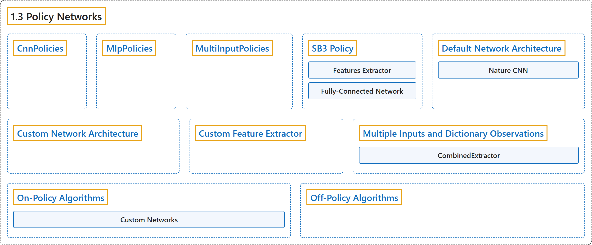

1.3 Policy Networks
Classification

Glossary
| Term | Definition | 中文翻译 | Source |
|---|---|---|---|
| 1.3 Policy Networks 策略网络 |
(context) "Stable Baselines3 provides policy networks for images (CnnPolicies), other type of input features (MlpPolicies) and multiple different inputs (MultiInputPolicies)." | （语境）Stable Baselines3 提供面向图像（CnnPolicies）、其他类型输入特征（MlpPolicies）和多种不同输入（MultiInputPolicies）的策略网络。 | Raffin et al., n.d., "Policy Networks", para. 1 |
| CnnPolicies CNN 策略 |
"Stable Baselines3 provides policy networks for images (CnnPolicies), other type of input features (MlpPolicies) and multiple different inputs (MultiInputPolicies)." | Stable Baselines3 提供了用于图像的策略网络（CnnPolicies）、用于其他类型输入特征的策略网络（MlpPolicies）以及用于多种不同输入的策略网络（MultiInputPolicies）。 | Raffin et al., n.d., "Policy Networks", para. 1 |
| MlpPolicies MLP 策略 |
"Stable Baselines3 provides policy networks for images (CnnPolicies), other type of input features (MlpPolicies) and multiple different inputs (MultiInputPolicies)." | Stable Baselines3 提供了用于图像的策略网络（CnnPolicies）、用于其他类型输入特征的策略网络（MlpPolicies）以及用于多种不同输入的策略网络（MultiInputPolicies）。 | Raffin et al., n.d., "Policy Networks", para. 1 |
| MultiInputPolicies 多输入策略 |
"Stable Baselines3 provides policy networks for images (CnnPolicies), other type of input features (MlpPolicies) and multiple different inputs (MultiInputPolicies)." | Stable Baselines3 提供了用于图像的策略网络（CnnPolicies）、用于其他类型输入特征的策略网络（MlpPolicies）以及用于多种不同输入的策略网络（MultiInputPolicies）。 | Raffin et al., n.d., "Policy Networks", para. 1 |
| SB3 Policy SB3 策略 |
"SB3 policies are usually composed of several networks (actor/critic networks + target networks when applicable) together with the associated optimizers." | SB3 策略通常由若干网络（actor/critic 网络，适用时再加目标网络）以及相应的优化器组成。 | Raffin et al., n.d., "SB3 Policy", para. 2 |
| Features Extractor 特征提取器 |
"A features extractor (usually shared between actor and critic when applicable, to save computation) whose role is to extract features (i.e. convert to a feature vector) from high-dimensional observations, for instance, a CNN that extracts features from images." | 特征提取器（适用时通常由 actor 和 critic 共享，以节省计算），其作用是从高维观测中提取特征（即转换为特征向量），例如从图像中提取特征的 CNN。 | Raffin et al., n.d., "SB3 Policy", item 1 |
| Fully-Connected Network 全连接网络 |
"A (fully-connected) network that maps the features to actions/value." | 一个（全连接）网络，把特征映射为动作/价值。 | Raffin et al., n.d., "SB3 Policy", item 2 |
| Default Network Architecture 默认网络架构 |
(context) "The default network architecture used by SB3 depends on the algorithm and the observation space." | （语境）SB3 使用的默认网络架构取决于算法和观测空间。 | Raffin et al., n.d., "Default Network Architecture", para. 1 |
| Nature CNN Nature CNN |
(context) "For image observation spaces, the “Nature CNN” (see code for more details) is used for feature extraction, and SAC/TD3 also keeps the same fully connected network after it." | （语境）对于图像观测空间，使用“Nature CNN”（详见代码）进行特征提取，SAC/TD3 还会在其后保留同样的全连接网络。 | Raffin et al., n.d., "Default Network Architecture", para. 3 |
| Custom Network Architecture 自定义网络架构 |
(context) "One way of customising the policy network architecture is to pass arguments when creating the model, using policy_kwargs parameter:" | （语境）自定义策略网络架构的一种方式，是在创建模型时通过 policy_kwargs 参数传入参数： | Raffin et al., n.d., "Custom Network Architecture", para. 1 |
| Custom Feature Extractor 自定义特征提取器 |
(context) "If you want to have a custom features extractor (e.g. custom CNN when using images), you can define class that derives from BaseFeaturesExtractor and then pass it to the model when training." | （语境）如果你想要自定义特征提取器（例如使用图像时的自定义 CNN），可以定义一个派生自 BaseFeaturesExtractor 的类，然后在训练时把它传给模型。 | Raffin et al., n.d., "Custom Feature Extractor", para. 1 |
| Multiple Inputs and Dictionary Observations 多输入与字典观测 |
(context) "Stable Baselines3 supports handling of multiple inputs by using Dict Gym space." | （语境）Stable Baselines3 支持通过使用 Dict Gym 空间来处理多个输入。 | Raffin et al., n.d., "Multiple Inputs and Dictionary Observations", para. 1 |
| CombinedExtractor CombinedExtractor 组合提取器 |
"This can be done using MultiInputPolicy, which by default uses the CombinedExtractor features extractor to turn multiple inputs into a single vector, handled by the net_arch network." | 这可以用 MultiInputPolicy 来实现，它默认使用 CombinedExtractor 这一把多个输入转换为单个向量的特征提取器，再交由 net_arch 网络处理。 | Raffin et al., n.d., "Multiple Inputs and Dictionary Observations", para. 1 |
| On-Policy Algorithms 同策略算法 |
(No definition) | （无定义） | Raffin et al., n.d., "On-Policy Algorithms" |
| Custom Networks 自定义网络 |
(context) "If you need a network architecture that is different for the actor and the critic when using PPO, A2C or TRPO, you can pass a dictionary of the following structure: dict(pi=[ |
（语境）如果使用 PPO、A2C 或 TRPO 时需要 actor 和 critic 采用不同的网络架构，可以传入如下结构的字典：dict(pi=[ |
Raffin et al., n.d., "Custom Networks", para. 1 |
| Off-Policy Algorithms 离策略算法 |
(context) "If you need a network architecture that is different for the actor and the critic when using SAC, DDPG, TQC or TD3, you can pass a dictionary of the following structure: dict(pi=[ |
（语境）如果使用 SAC、DDPG、TQC 或 TD3 时需要 actor 和 critic 采用不同的网络架构，可以传入如下结构的字典：dict(pi=[ |
Raffin et al., n.d., "Off-Policy Algorithms", para. 1 |
References
Raffin, A., Hill, A., Gleave, A., Kanervisto, A., Ernestus, M., & Dormann, N.. (n.d.). Policy Networks. Stable-Baselines3 docs (Version 2.9.2a0). Retrieved October 31, 2026, from https://stable-baselines3.readthedocs.io/en/master/guide/custom_policy.html